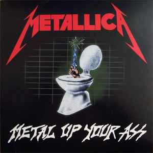
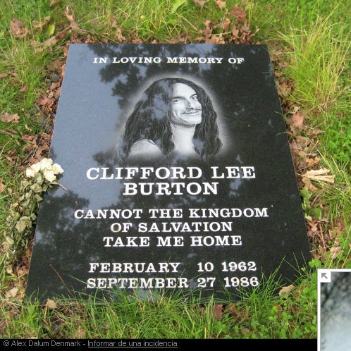
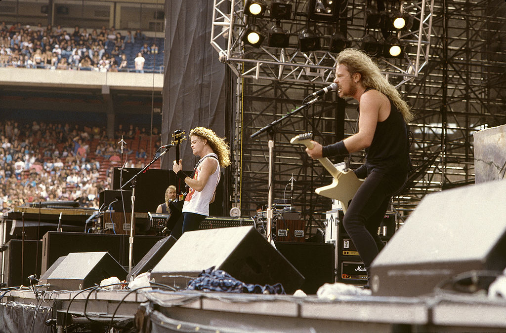
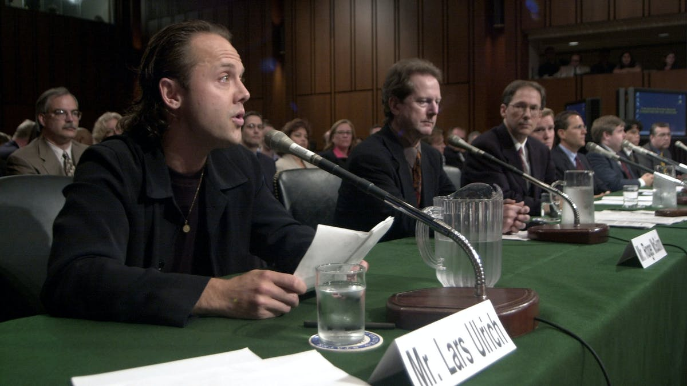
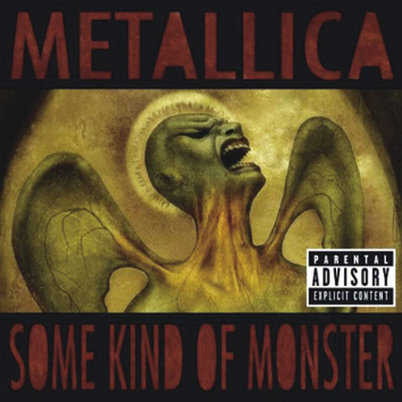
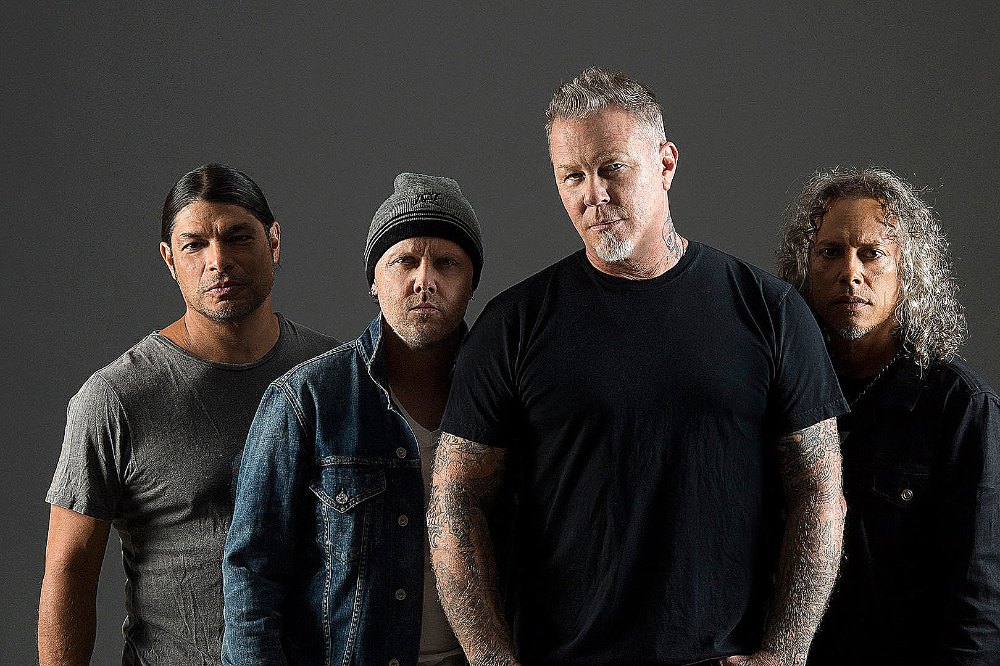

A principios de los 80s nacería una de las bandas metaleras más influyentes, innovadoras
y populares de la historia, Metallica. La historia de Metallica comienza en 1980 cuando
un adolescente danés llamado Lars Ulrich se trasladará con su familia a los Ángeles.
Lars era hijo del tenista profesional Torben Ulrich y se suponía que el joven Lars seguiría
sus pasos empuñando una raqueta; pero su camino se torció cuando
se obsesiono con la música de la denominada como nueva ola del heavy metal británico
que surgió a finales de los 70. Gracias a la inspiración empezó a tocar la batería y
al de un tiempo Lars quiso formar una banda; para esto público un anuncio en el
periódico solicitando un guitarrista para formar una banda con influencia
de las bandas de la nueva ola del heavy metal, más concretamente Diamond Head,
Def Leppard, Iron Maiden y Tygers of Pan Tang. El joven guitarrista llamado
James Hetfield, de la misma edad, hijo de un propietario de una compañía de camiones
y de una cantante de ópera que habían educado a sus hijos en la Ciencia Cristiana,
respondió de inmediato a su anuncio. Entonces Ron (un amigo de James), Lars y James
comenzaron a ensayar juntos; al principio no le convenció la forma de tocar de Ulrich,
entonces Lars tuvo que sacar su as de la manga resulta que Lars había echo muchos
contactos en el medio musical, incluso ya había conseguido un espacio para un disco
recopilatorio que estaba creando un amigo suyo, el
“Metal Massacre”.
Pero aun necesitaban un guitarrista más, entonces contactaron al guitarrista Dave Mustaine,
quien al principio también era la voz del grupo ya que james no se atrevía a cantar.
Ya con la banda formada lo ultimo que les faltaba era el nombre para esta. Resulta que
un amigo de Lars estaba creando una revista de metal y en búsqueda de un nombre
para su revista pregunto a Lars cual de las dos ideas que tenía pensadas le recomendaría,
Metalmania o Metallica, Lars lo convence de que elija Metalmania ya que el
nombre de Metallica le había encantado.
Después de ensayar varios meses Metallica decide empezar a dar conciertos en algunos
bares locales; pero el sonido desenfrenado y rápido de Metallica no coincidía con el tipo de
música que triunfaba en los 80s, así que nadie los quería dejar tocar en los bares de Los
Ángeles. Al de un tiempo Metallica se muda a San Francisco en donde el metal estaba
en auge. Las disputas entre Ron y Mustaine eran tan constantes que Ron decidió
abandonar la banda.
Pero un día mientras andaban por las calles de San Francisco escucharon en un bar cercano
a un guitarrista que les había llamado mucho la atención; pero al entrar al bar se
sorprendieron por que el guitarrista en realidad era el bajista Cliff Burton. Les había gustado
tanto la forma de tocar de Cliff que al de poco tiempo le dieron la oportunidad de unirse a
la banda.
Ya con la primera formación, sacan su primer demo
“No Life 'Til Leather”,
que les
conseguir algo de fama y la oportunidad de grabar su primer disco
pero con una sola condición que Mustaine debía abandonar la banda; entonces un día
por la noche James y Lars se acercan a la habitación donde dormía Mustain y le dicen
la legendaria frase “Dave, you are out of the band”. Esto creo la gran disputa entre
las dos bandas más grandes del metal, Metallica y Megadeath la banda que más tarde
formaría Mustain. Según la banda, la razón de la expulsión de Mustaine era que la
convivencia con el era muy complicada por culpa de todos sus excesos con el
alcohol y su carácter problemático.

Krik Hammett guitarrista de la banda Exodus remplazaría a Mustaine y tras esto en 1984
lanzarían su primer álbum
“Kill ‘em All”.
Originalmente el nombre iba a ser
“Metal Up Your Ass”, pero las discográficas no querían publicar este disco por culpa del
título. Tras muchos intentos de que alguna discográfica quisiera publicar su
álbum llegaron a un punto tan alto de desesperación que Cliff dijo “maten los a todos”
(en ingles “kill ‘em all”). Al principio vendieron 300 mil copias, algo que les sorprendió
Mucho y les motivo a seguir. El disco está formado por muchas de las canciones que
conformaban el demo y otras cuantas nuevas. A día de hoy este disco se a clasificado
como triple platino gracias a las mas de 3 millones de ventas que ha tenido.
Un año mas tarde de la publicación del Kill ‘em All publicaron el disco
Ride The Lightning,
disco con letras mas sofisticadas, y herramientas mas técnicas con cambios de ritmos y
melodías mas elaboradas agracias a los amplios conocimientos musicales de Cliff ya
que el aporto en gran medida a la composición del álbum.
Este álbum cuenta con grandes sencillos como
“Creeping Death”
o como la primera
power balad de la banda
“Fade to Black”
donde muestran su gran versatilidad entre
ritmos lentos y guitarras desenfrenadas.
Todo el éxito que lograron dio vida al nombre “alcohólica” nombre que le dio la prensa
por culpa de los excesos de alcohol que consumían.
El 3 de marzo de 1986 sale al mercado
Master Of Puppets
considerado como uno de los
mejores discos de metal de la historia. Con Kill ‘em All cimentaron las bases Thrash
metal, con Ride The Lightning ampliron el concepto musical y con Master Of Puppets
abrieron las puertas del thrash almundo entero; incluso en aquel entonces Master Of Puppets
fue el primer disco de metal en llegar a platino.

Pero todo no podía éxitos para Metallica; ya que el 27 de septiembre de 1986 Cliff Burton
a la edad de 24 años moriría por culpa de un accidente automovilístico. Según el conductor
del autobús en el que iba Cliff, este inténtenlo esquivar el hielo que había en la carretera
y por culpa de esto el bus volcaría haciendo que Cliff fuera aplastado por el bus.
Tras estar un largo tiempo meditando y de haber hablado con los padres de Cliff decidieron
que Metallica debía continuar. Entonces decidieron hacer una audición de la cual eligieron
a Jason Newsted como nuevo bajista de la banda.
Ya con Newsted en el grupo publican su próximo álbum “…And Justice For All” que consiguio 8 discos de Platino por la venta de 8 millones de copias; aunque la critica y el público tuvieron una opinión dividida sobre todo por culpa del sonido del bajo, ya que este es casi inperceptible. Nunca se a sabido con certeza cual es la causa por la que no se escucha el bajo; pero el hombre encargado de la mezcla del disco Steve Thompson dijo en una ocasión que la culpa de esto había sido Lars quien quiso bajar el volumen del bajo para que la batería sonara aún más.

En los años 90s crean un nuevo álbum junto a Bob Rock llamado “Metallica”; aunque la gente
lo conoce más como “The Black Album”. Este disco vendió más de 18 millones de copias en su
lanzamiento convirtiéndose en doble platino, haciendo así que las puertas de la fama se les
abriera. Estuvieron 3 años seguidos de gira, con mas de 300 conciertos alrededor del mundo.
Sin duda este es su álbum más famoso y más vendido de toda su discográfica.
Mucha gente acusa a este álbum como un punto de inflexión en la carrera de Metallica ya que
a partir de ahora su música dejaría de ser tan underground y se volvería comercial.
Metallica regresaría en 1996 con el disco Load y que poco tiempo después le siguió Reload, estos discos fueron muy controvertidos entre los fans de Metallica; ya que se alejaron de los ritmos rápidos y desenfrenados del metal para hacer una música más orientada al rock alternativo y hard rock. Afinales de los 90s Metallica sacaria Garage Inc. un álbum de covers y S&M un álbum que mezclaba el canciones de Metal con la música clásica.
A principio del 2000 Metallica volvería a dar de que hablar por culpa de la demanda hacia napster la el primer servicio de música en streaming. Napster trataba de un servicio en Streaming para escuchar música pero el problema era que esta música era pirata. Mucha gente cree la lucha contra la piratería de Metallica fue un gran error ya que Metallica antes se consideraba como un grupo para el pueblo y con esto se dio a conocer como en realidad lo que les importaba era el dinero.
Tras la lucha con la piratería, un nuevo acontecimiento vino para Metallica, el Bajista Jason Newsted dejaría la banda. Newsted dejo la banda ya que el tenia otras aspiraciones, además estaba empezando otro proyecto musical que causó muchas discusiones dentro de la banda que le motivo a abandonar la banda.

Con el abandondo de Newsted Metallica se embarcaría en un nuevo proyecto, la película documental
“Some kind of Monster” que tenía el objetivo narra cómo grabación del álbum ST. Anger pero en
Realidad muestra como casi Metallica deja de existir. Durante el documental se muetran las
grandes discusiones que mantenía toda la banda entre ellos y como esto estaba destruyendo la
banda. Ademas James decide empezar un tratamiento de desintoxicación para poder luchar contra
el alto nivel de alcohol que consumía.
Tras la vuelta de James Metallica decide sacar más material, pero como no tenían bajista el productor
Bob Rock tomaría el papel de bajista mientras buscan un remplazo de Newsted. En la búsqueda
de un remplazo aparece Robert Trujillo, bajista de Ozzy Osborne y de Suicidal Tendences.
Finalmente en 2003 sale al mercado el disco ST. Anger. Aunque ganara un Grammy y llegara a los
puestos mas altos de las listas de EEUU, el disco no gusto ni a críticos ni a fans por culpa de la
ausencia de solos y sobre todo del horrible sonido que tenia la batería.
Tras 5 años de giras y descansos, Metallica intenta volver a encontrar su sonido clásico de metal y para esto con la ayuda del productor de Slayer sacan el disco Death Magnetic. Con este disco Metallica volvió al thras metal que solían tener en los 80s. Y siguiendo con esta recuperación de su estilo clásico en 2016 sacaron Hardwire to self-destruction; ultimo álbum que han sacado hasta la fecha.
Gracias 10 los álbumes de estudio, el documentas, la película y toda su historia en general hizo que Metallica se volvería en la leyenda que es hoy en día, convirtiéndose en inspiración para muchas bandas de la actualidad.
